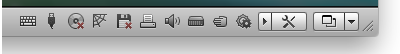
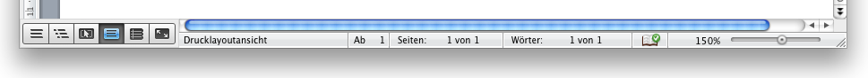

| Usability Pattern | Systemstatus |
|---|---|
| Problem | Benutzer möchten den aktuellen Status des Systems erkennen können. |
| Lösung |
Stelle den aktuellen Status des Systems konsistent und leicht erkennbar dar. Der Systemstatus sollte Benutzer zum Beispiel über den momentanen Zustand des Systems, den aktiven Benutzungsmodus oder aktive Einstellungen informieren. Die dargestellten Informationen sollten dabei für Benutzer bei der Erledigung ihrer Aufgaben relevant sein. Der Status sollte so dargestellt werden, dass er für Benutzer leicht erkennbar und verständlich ist. Es bietet sich an, den Status stets an derselben Position in der Benutzungsschnittstelle anzuzeigen, um Benutzern die Orientierung zu erleichtern. Änderungen des Systemstatus müssen unmittelbar dargestellt werden. Benutzer können auf Änderungen durch dezente Animationen oder Hervorhebungen aufmerksam gemacht werden (etwa ein kurzes Aufleuchten der aktualisierten Zustandsdarstellung). |
| Beispiele |
Parallels Desktop: Statusanzeige für virtualisierte Hardware Die Virtualisierungslösung Parallels Desktop zeigt in einer Statusleiste an, welche virtualisierten Geräte dem Gastsystem aktuell zur Verfügung gestellt werden. Deaktivierte Geräte werden mit einem kleinen X gekennzeichnet. Benutzer können so jederzeit einen Überblick über die Konfiguration der virtuellen Hardware erhalten.  Status virtualisierter Hardware in Parallels Desktop Microsoft Word 2011 für Mac: Statusleiste Microsoft Word zeigt Benutzern in einer Statusleiste am unteren Fensterrand verschiedene Informationen an. Dazu gehören der aktuelle Ansichtsmodus (im Beispiel: Drucklayoutansicht), Informationen zum Dokument (Seitennummer und -anzahl), der Status der Rechtschreibprüfung (im Beispiel: grünes Häkchen, keine Fehler gefunden) und die aktuelle Zoomstufe (im Beispiel: 150%). Diese Statusinformationen werden permanent angezeigt.  Statusleiste in Microsoft Word |
| Nutzungskontext |
|
| Risiken, Nachteile, Kosten |
Eine aufgabenangemessen gestaltete Benutzungsoberfläche sollte nur Informationen darstellen, die für Benutzer tatsächlich bei der Arbeit mit dem System von Interesse sind. Wenig relevante Statusangaben oder rein technische Formulierungen verwirren Benutzer mehr, als dass sie sie unterstützen. Der Systemstatus sollte deshalb nur dargestellt werden, wenn die Darstellung für Benutzer hilfreich ist. |
| Anforderungserhebung |
Identifiziere Benutzungs- oder Betriebsmodi des Systems.
|
| Anforderungsspezifikation |
Spezifiziere globale Vorgaben für den Einsatz des Usability Patterns „ Systemstatus “:
Spezifiziere, für welche Interaktionen das Usability Pattern „ Systemstatus “ eingesetzt wird. Annotiere und ergänze dazu vorhandene Use Cases :
|
| Architekturentwurf |
{kind=link}
{kind=link}